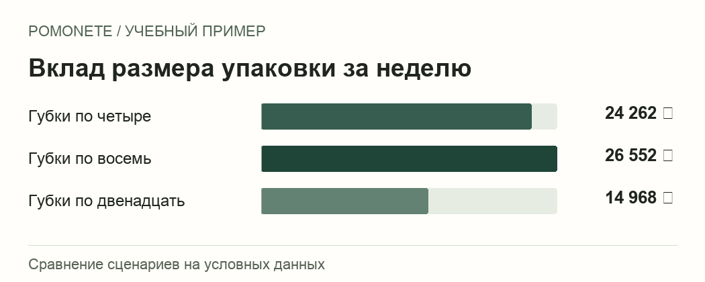

Разные размеры упаковки на Яндекс Маркете. Где меняется вклад
Аналитика ценовой лестницы для селлера с ценой поставки, продажами и переменными расходами.
Упаковки губок на Яндекс Маркете различаются ценой, числом предметов и стоимостью доставки. Селлер видит, что покупатели чаще берут маленькую, но экономика каждой покупки разная. Подбор размеров требует согласовать финансовый и складской расчёт.
Какие единицы лежат в таблице
Число доставленных упаковок берётся из выбранных товарных строк. Для планирования склада умножьте его на количество предметов внутри и сверяйте с физическим остатком. Переменные расходы оценивайте на продаваемую упаковку, включая эксплуатацию тары и фактические услуги.
Чтобы пересобрать расчёт «Вклад размера упаковки за неделю» для своего магазина, перенесите в него исходные числа. В формуле A обозначает «доход на упаковку, ₽», B обозначает «прямые затраты на упаковку, ₽», C обозначает «доставленные упаковки», D обозначает «затраты подготовки, ₽». Удельную разницу умножают на количество. Последняя величина относится ко всему сценарию и учитывается один раз. Запишите рядом период и охват каждого среза. Если для одной строки известна только оценка, оставьте пояснение непосредственно рядом с ней: по итоговой цифре источник уже не восстановить.
Вклад размера упаковки за неделю = (A − B) × C − D
| Условие | Доход на упаковку, ₽ | Прямые затраты на упаковку, ₽ | Доставленные упаковки | Затраты подготовки, ₽ | Вклад размера упаковки за неделю |
|---|---|---|---|---|---|
| Губки по четыре | 460 | 302 | 164 | 1 650 | 24 262 ₽ |
| Губки по восемь | 780 | 526 | 113 | 2 150 | 26 552 ₽ |
| Губки по двенадцать | 1 060 | 781 | 62 | 2 330 | 14 968 ₽ |

В сценарии «Губки по четыре» в формулу подставляем доход на упаковку, ₽ = 460, прямые затраты на упаковку, ₽ = 302, доставленные упаковки = 164, затраты подготовки, ₽ = 1 650. Получается 24 262 ₽. Малая упаковка легко продаётся одной покупкой и занимает существенную долю выборки.
В сценарии «Губки по восемь» в формулу подставляем доход на упаковку, ₽ = 780, прямые затраты на упаковку, ₽ = 526, доставленные упаковки = 113, затраты подготовки, ₽ = 2 150. Получается 26 552 ₽. Изменилась стоимость расходников и число единиц на отправление.
В сценарии «Губки по двенадцать» в формулу подставляем доход на упаковку, ₽ = 1 060, прямые затраты на упаковку, ₽ = 781, доставленные упаковки = 62, затраты подготовки, ₽ = 2 330. Получается 14 968 ₽. У покупателя ниже цена в пересчёте на предмет, но требуется отдельная поставка.
Если «Губки по четыре» взять за исходную точку, «Губки по восемь» меняет показатель «вклад размера упаковки за неделю» на 2 290 ₽, а «Губки по двенадцать» на -9 294 ₽. Между двумя последними строками разница составляет -11 584 ₽ при вычитании второй из третьей. Смотрите, какой именно вход изменился между строками. Если менялись объём и условия одновременно, итог сравнения относится ко всему сочетанию.
В пересчёте на исходное значение разница второй строки составляет 9,44%. Здесь в знаменателе модуль первого результата, 24 262 ₽. Для показателя в процентах рядом сохраните и абсолютную разницу в процентных пунктах. Для малого исходного значения процентный скачок может оказаться крупным даже при скромном практическом эффекте. В рабочем отчёте оставьте оба исходных значения, чтобы при расширении выборки можно было пересчитать изменение.
Что если одна упаковка тянет две продажи
Покупатель может взять две маленькие упаковки и заплатить примерно столько же, сколько за большую. Влияние на общий расход и долгосрочный выбор изучайте по составу заказов. Если новой упаковкой заменили существующие продажи, восстановите деньги всего семейства.
Соберите небольшую исходную выборку для «Губки по восемь», прежде чем переносить правило на весь магазин. Нужны экономика заказов и собственная закупочная ведомость. Среди записей найдите одну обычную и одну с изменённым значением «доход на упаковку, ₽». Убедитесь, что после пересчёта на сопоставимое окно обе строки дают те же результаты, которые видит исполнитель. Для ручных поправок оставьте короткое основание.
Выгрузка маркетплейса даёт начисления по операциям. Собственную стоимость закупки, труд и расходники подставляют из учёта магазина с датой действия. Для решения по ассортименту разделите повторяющиеся переменные расходы, затраты на запуск и текущие фиксированные расходы команды. После изменения предложения обновляются и продажи соседних изделий. Счёт по одному товару имеет смысл дополнить итогом той группы, между вариантами которой может переключиться покупатель.
Что сильнее всего меняет результат
Для «вклад размера упаковки за неделю» начнём с результата 26 552 ₽. В «Губки по восемь» условно меняем «доход на упаковку, ₽», «прямые затраты на упаковку, ₽», «доставленные упаковки», «затраты подготовки, ₽» по очереди. Шаг округляем до целой исходной единицы около 10%. Сравнение относится к одной строке расчёта. При сильной сезонной смене его полезно повторить и на второй базе с другим доступным объёмом.
- «Доход на упаковку, ₽» меняется с 780 на 858. При прежних остальных входах получается 35 366 ₽, сдвиг составляет 8 814 ₽.
- «Прямые затраты на упаковку, ₽» меняется с 526 на 579. При прежних остальных входах получается 20 563 ₽, сдвиг составляет -5 989 ₽.
- «Доставленные упаковки» меняется с 113 на 124. При прежних остальных входах получается 29 346 ₽, сдвиг составляет 2 794 ₽.
- «Затраты подготовки, ₽» меняется с 2 150 на 2 365. При прежних остальных входах получается 26 337 ₽, сдвиг составляет -215 ₽.
Самый заметный эффект дали данные по «доход на упаковку, ₽»: 8 814 ₽. Подготовьте второй тест с двумя входами, которые обычно меняются вместе. Сравните его с одиночной подстановкой. Различие покажет, хватит ли следить за одной строкой при выбранном действии или в отчёте понадобится связанная пара наблюдений.
Дополните анализ проверкой расходов на новый тип транспортной упаковки, если он нужен для крупного варианта. Другой внешний размер может менять стоимость отгрузки. Для теста берите значения из собственной сметы и фактической геометрии отправления.
Как тестировать следующую выкладку
Выберите одно изменение. Сохраните наличие ходовых вариантов и сравните темп и вклад выбранного размера. Для закупки посчитайте общий расход физических штук. После закрытия возвратов сравните результат по размеру продаж и по общей группе.
Поставьте рядом плановую и фактическую строки сделки с сохранённой себестоимостью. Проверку удобнее начинать с позиций, на которые приходится основной вклад, потом выделять случаи с нестандартной логистикой, возвратом или разовой скидкой. Если после смены состава продаж средняя величина улучшилась, восстановите исходные веса и оцените, сколько прироста действительно получилось на сопоставимых позициях.
Заведите карточку наблюдения с тремя числами: исходный ориентир, факт после вмешательства и размер выборки. Для «вклад размера упаковки за неделю» оставьте единицу из таблицы и дату подстановки. В аналитике продавца Яндекс Маркета показатель должен отвечать на тот же вопрос при повторном сборе. Если на следующем цикле изменятся исходники, сохраняйте расхождение вплоть до строки, которую сможет пересчитать коллега.